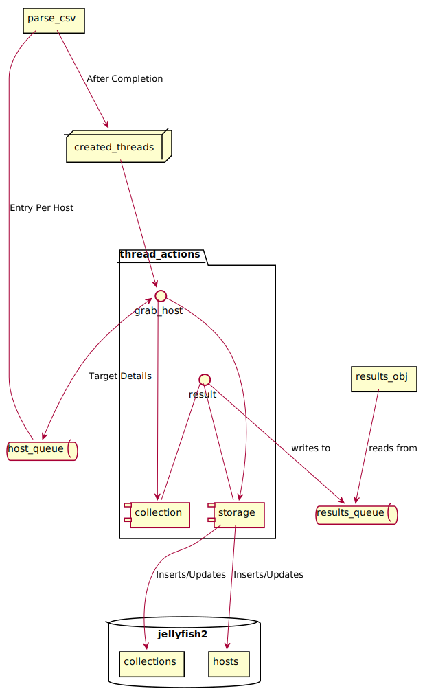
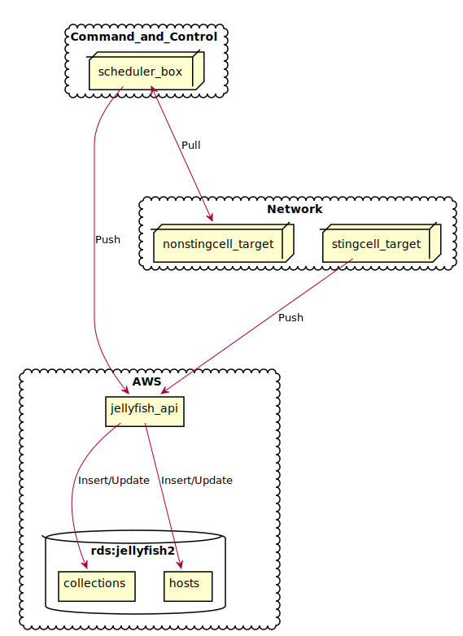

Scheduler
Introduction
The scheduler is a module that essentially interacts with three other modules,
collector, storage and sapicheck. It ties these together and in a big ole
loop enumerates the systems in Uber and attempts to profile them.

Performance
As of this writing, the scheduler is configured to utilize 256 threads for collecting. Because of the nature of collections (it's a lot of do wait), most of the time you spend waiting for processes to return on the target hosts. The 256 threads limitiation is likely a database limitation.
Because of these limitations the scheduler is limited to run for 8 hours a day. It prioritizes systems in production and ends up behind schedule quite a bit. The orignal plan was to migrate this into EBY but before we could do that SecEng was Oathafied. So the future of the product will be decided by whomever takes it over.
Input/Output
The scheduler is called by cron (at the moment) and it is fenced with a lockfile
in /var/run/jellyfish. The scheduler utilizes a configurable amount of threads
(configured in scheduler.ini in SVN) to run a number of instances of the Collector
& Storage modules. It uses the server4.csv file located in the netinfo svn
location to grab a list of servers it needs to check.
The module will quit after a certain amount of time where it can't reach all the hosts. In this scenario it will return an item in the output json that looks like this:
"Timeout": "Timeout reached at 57627.98305392265 seconds with 29 items left on the queue.",
The Verbose module will output a status message to stdout for the duration of the run. Additionally a final status json will be outputted to stdout (and optionally to a seperate file) that contains the following pieces of information:
global_fail_hosts- How many hosts scheduler failed to collect data fromglobal_fail_hosts_list- A list of those hostsglobal_fail_prod- How many hosts scheduler failed that were listed as "production".global_fail_prod_list- A list of those production hosts.global_success_hosts- How many hosts scheduler successfully collected data from.global_success_hosts_list- A list of those hosts.jobtime- How long, in seconds, scheduler ran for.threads- How many threads the system used
Gap Fix
Gap fix is a related module to Scheduler. It's designed to find systems that are in prod in uber but don't have a recent result. It works almost the same as scheduler but has a lighter load so that it doesn't interrupt normal operations.
Most importantly it doesn't trigger the lock file that keeps analysis from running.
Future State
Probable
Ideally this would in the future be replaced with stingcell, an agent that runs on hosts and reports information back via the storage api. Scheduler would likely have a funcationality similar to gap_fix and only stand to attempt to login to systems that hadn't checked in via the api for a period of time.
It would be likely that a box in EC & IR500 Command and Control environments would exist with API keys that can log into the missing hosts (See Diagram). And it, like stingcell would utlize the API to make it's storage calls. While the document only shows one LC, it's likely we'd have a node in every LC that we had along with (potentially) additional nodes for Cloud Assets if that was the direction we wanted to go.

In a fully realized, microservices architecture the Scheduler would be obsolete.